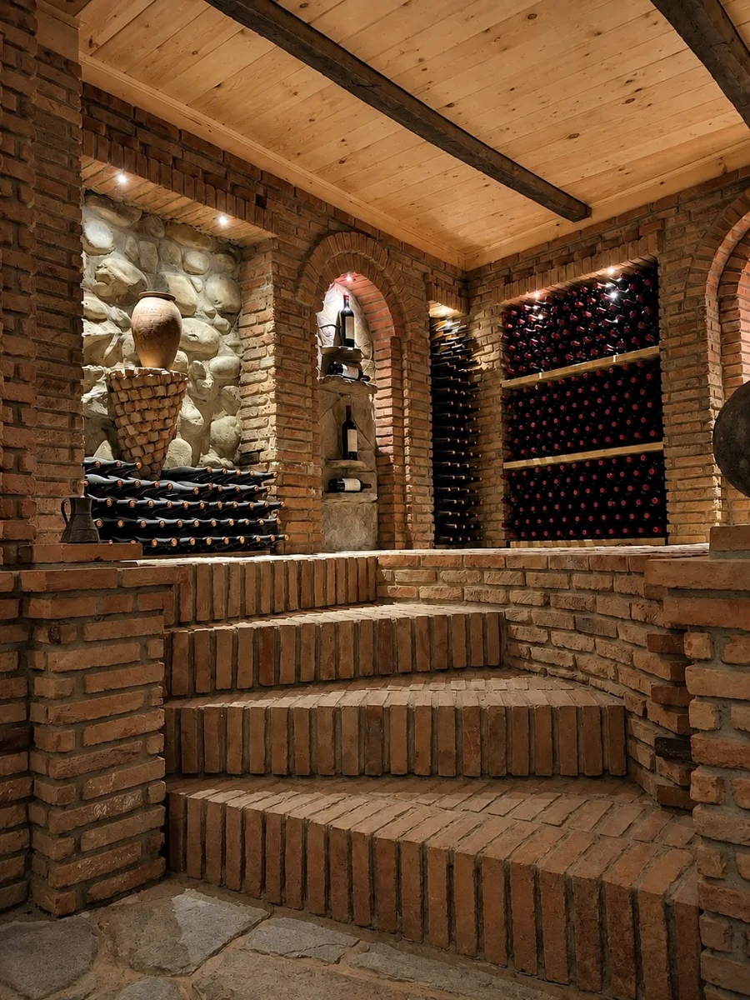

THE CELLAR · WHERE OUR STORY LIVESA FAMILY TRADITION, UNBROKEN
One qvevri.
Generations of care.
In 1908, our great-grandfather buried the family’s first qvevri in Georgian soil. More than a century later, we still make wine in that very same vessel.
What has passed from one generation to the next is more than a method. It is a way of caring for the land, a respect for time, and the pleasure of sharing what we make.
The way we make wine